Termine, Anwesenheit, Teams und Linien, Spieler, Ergebnisse, Statistik
Als Trainer kannst du alles, was ein Spieler kann, und zusätzlich die Mannschaft verwalten. Diese Anleitung beschreibt nur die Trainer-Funktionen – Anmelden, Installieren, Push und Zusagen stehen in der Spieler-Anleitung. Alle Anleitungen findest du in der App unter Menü → Downloads. Die App: stars-trainingsplaner.firebaseapp.com
Die Bilder zeigen Beispieldaten. Rot umrandet ist jeweils der Knopf, um den es geht. Trainer-Rechte vergibt der Entwickler (Martin) – in der App selbst nicht.
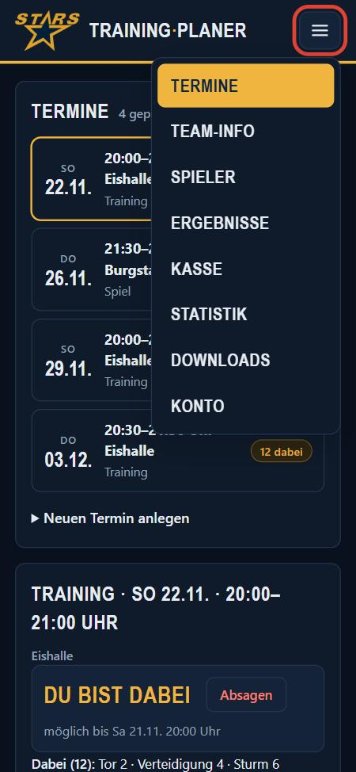
Dein Menü
Oben rechts ☰. Zusätzlich zu Termine, Team-Info, Downloads und Konto hast du:
Spieler – Kader, Stärken, Zugänge
Ergebnisse – Ergebnis und „nicht erschienen“ nach dem Termin
Statistik – Anwesenheit, Siege und Niederlagen je Spieler
Eine goldene Zahl bei Termine heißt: Eine kurzfristige Abmeldung wartet auf deine Bestätigung.
Stärken, Team-Entwürfe, Spielerliste, Ergebnisse und Statistik sehen nur Trainer.
Zu erledigen
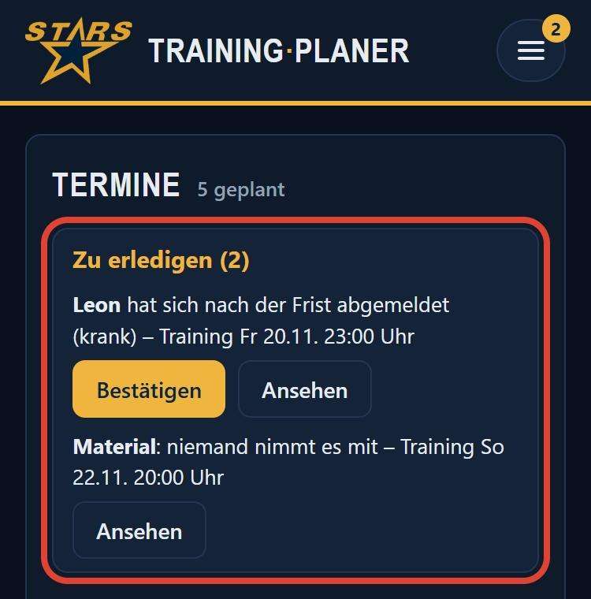
Eine goldene Zahl bei Termine heißt: Etwas wartet auf dich. Ganz oben im Tab Termine steht dann die Box „Zu erledigen“ (rot markiert):
Abmeldung nach der Frist – direkt Bestätigen oder erst Ansehen.
Trikots fehlen – Ansehen öffnet den Termin, dort jemanden anfragen.
Ist alles erledigt, verschwinden Box und Zahl. Neue Team-Infos sind in der Team-Info mit „neu“ markiert.
1 · Termin anlegen
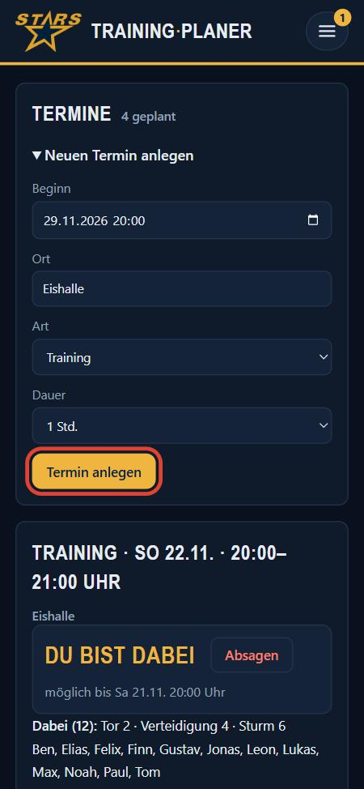
Menü → Termine, unter der Liste + Termin antippen.
Beginn (Datum und Uhrzeit), Ort, Art (Training oder Spiel) und Dauer wählen.
Termin anlegen tippen (rot markiert).
Alle Spieler mit Zugang sind automatisch dabei und bekommen eine Push-Nachricht „Neuer Termin“.
Nachträglich ändern lassen sich Zeit, Ort und Art nicht – dann den Termin löschen und neu anlegen. Termine in der Vergangenheit lassen sich nicht anlegen.
Beispiel: Spiel am Samstag in Burgstall, 21:30, 1½ Stunden → Beginn Sa 21:30 · Ort „Burgstall“ · Art Spiel · Dauer 1 Std. 30 Min. → Termin anlegen. Die Spieler sehen sofort „Spiel · Sa · 21:30–23:00 Uhr“.
2 · Termin absagen oder löschen
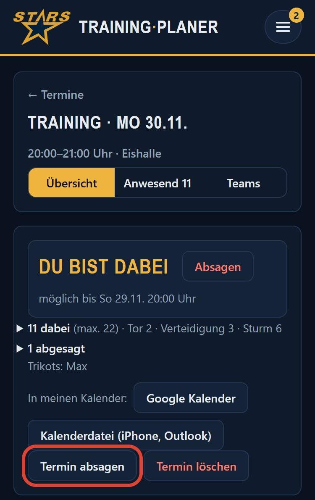
Termin absagen – der Termin bleibt sichtbar, steht als „fällt aus“ da, alle bekommen eine Push-Nachricht. Mit Termin findet doch statt machst du es rückgängig.
Termin löschen – entfernt den Termin ganz (mit Zusagen, Teams, Ergebnis). Zur Sicherheit zweimal tippen („Sicher? Nochmal tippen“).
Fällt ein Training aus, lieber absagen statt löschen – dann wissen alle Bescheid.
3 · Anwesenheit
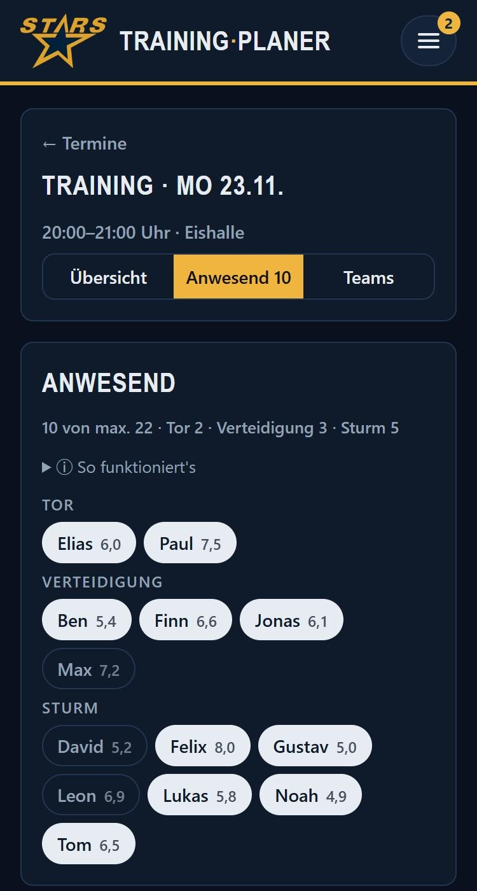
Termin antippen → seine Detailseite öffnet sich mit drei Reitern: Übersicht (wie bei den Spielern, dazu Termin absagen/löschen), Anwesend und Teams bzw. bei Spielen Linien. Im Reiter Anwesend stehen alle aktiven Spieler nach Position, mit Stärke. Hell = dabei, dunkel = abgesagt. Mit ← Termine geht es zurück zur Liste.
Ein Spieler antippen schaltet zwischen dabei und abgesagt um – das geht für dich jederzeit, auch nach der 24-h-Frist.
Gäste ohne Zugang haben einen gestrichelten Rand und sind nicht automatisch dabei: Wenn ein Gast kommt, antippen (im Bild: Gustav).
Beispiel: Leon ruft am Trainingstag an und kann nicht → Termin antippen → Reiter Anwesend → Leon antippen → er ist abgesagt.
Feldspieler ins Tor (Training)
Sagt bei einem Training nur ein Torhüter (oder keiner) zu, erscheint im Reiter „Anwesend“: „Nur ein Torhüter dabei – ein Feldspieler kann für dieses Training ins Tor“. Spieler wählen (z. B. Andy), Stärke im Tor eintragen und Ins Tor tippen. Für dieses Training zählt er dann als Torhüter – bei „Tor 2“, in der Team-Einteilung (mit seiner Torhüter-Stärke) und in der Teams-Anzeige. In der Liste steht er als „Andy (V)“ unter Tor. Zurück aufs Feld macht es rückgängig. Wurden die Teams schon erzeugt, danach Neu mischen tippen.
In der Spielerliste und bei allen anderen Terminen bleibt er Feldspieler mit seiner normalen Stärke.
Höchstzahl und Warteliste
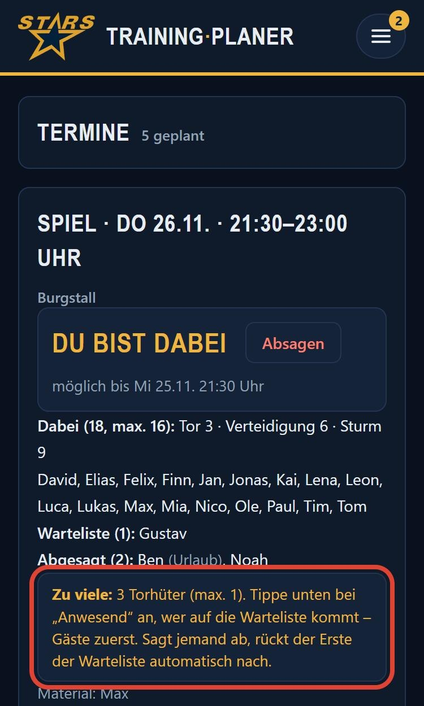
Pro Termin gilt eine Höchstzahl: Spiel 15 Feldspieler (3 volle Linien) und 1 Torhüter, Training 20 Feldspieler und 2 Torhüter. Verteidiger und Stürmer zählen zusammen. Beim Termin steht „Dabei (18, max. 16)“.
Sind es zu viele, erscheint der Hinweis „Zu viele“ (rot markiert). Du entscheidest, wer auf die Warteliste kommt – Gäste zuerst.
Bei Anwesend einen Spieler antippen: Solange es zu viele sind, kommt er auf die Warteliste (gold gestrichelt). Nochmal antippen = abgesagt, nochmal = dabei.
Einen Gast antippen, wenn der Termin voll ist: Er kommt direkt auf die Warteliste.
Sagt jemand ab, rückt der Erste der Warteliste automatisch nach (Torhüter für Torhüter, Feldspieler für Feldspieler) und bekommt eine Push-Nachricht.
Abwesenheiten (krank, Urlaub)
Spieler melden selbst einen Zeitraum, in dem sie fehlen – sie sind dann bei allen Terminen darin automatisch abgesagt. Du kannst das auch für einen Spieler eintragen.
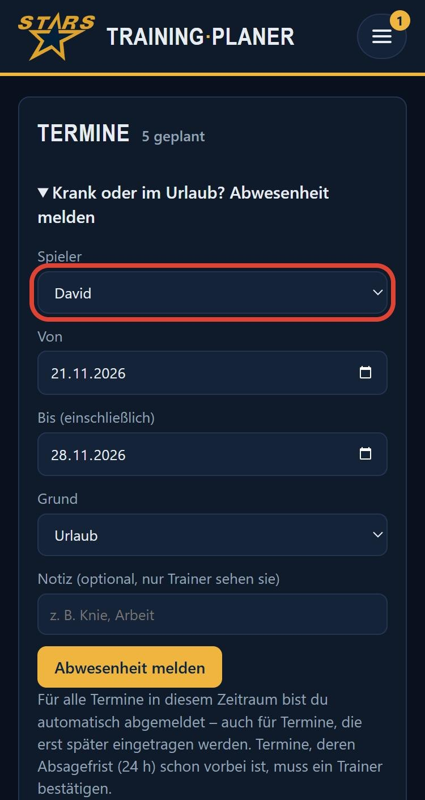
Unter den Terminen Abwesend melden antippen.
Bei Spieler den Namen wählen (rot markiert), dann Von, Bis und Grund.
Abwesenheit melden.
Darunter siehst du alle laufenden und kommenden Abwesenheiten mit Grund, Notiz und wer sie gemeldet hat. Wieder da beendet eine Abwesenheit, Löschen entfernt eine künftige.
Was du einträgst, gilt sofort – auch nach der Absagefrist.
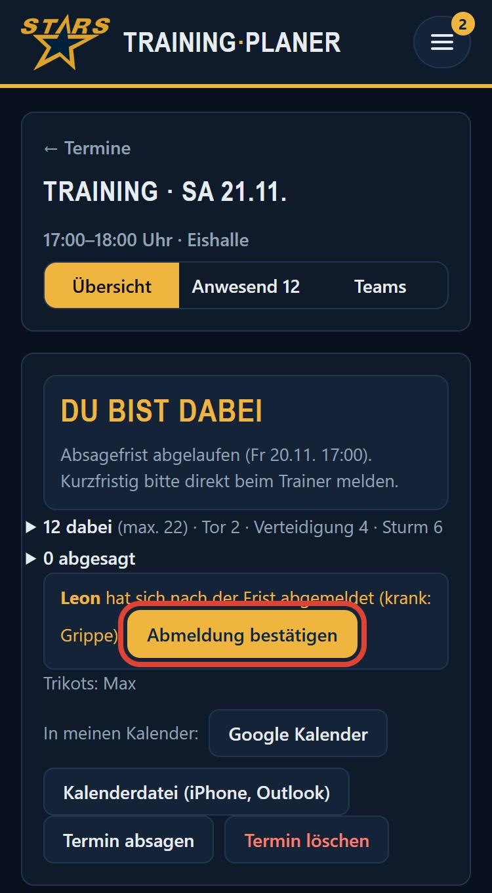
Kurzfristige Abmeldung bestätigen
Meldet sich ein Spieler nach der Absagefrist ab, zählt er bei diesem Termin noch als dabei. Alle Trainer bekommen sofort eine Push-Nachricht, und am Menü und bei Termine erscheint eine goldene Zahl. Beim Termin steht der Hinweis mit Abmeldung bestätigen (rot markiert).
Beispiel: Leon meldet sich am Trainingstag krank → 1 am Menü → Termine → Training antippen → „Leon hat sich nach der Frist abgemeldet (krank: Grippe)“ → Abmeldung bestätigen → Leon ist abgesagt.
Trikots
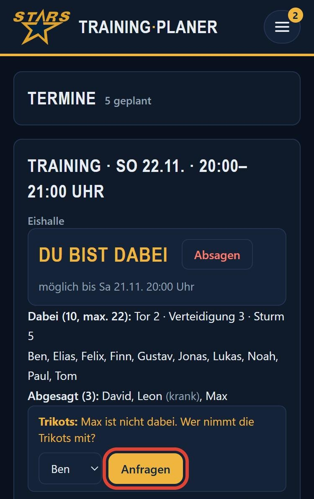
In der Spielerliste setzt du bei Trikots den Haken beim Verantwortlichen. Beim Termin steht dann „Trikots: Max“.
Ist er nicht dabei, erscheint beim Termin „Max ist nicht dabei. Wer nimmt die Trikots mit?“ und eine goldene Zahl bei Termine.
Einen Spieler wählen, der dabei ist → Anfragen (rot markiert). Er bekommt eine Push-Nachricht.
Sagt er zu, steht „Trikots: Ben (für Max)“. Sagt er ab, bekommst du eine Push-Nachricht und fragst den Nächsten.
4 · Teams für Trainings
Training antippen → Reiter Teams.
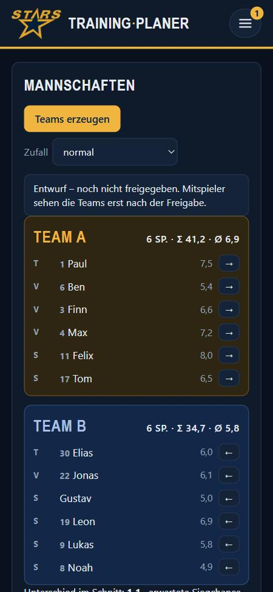
Entwurf mit Stärken und Pfeilen
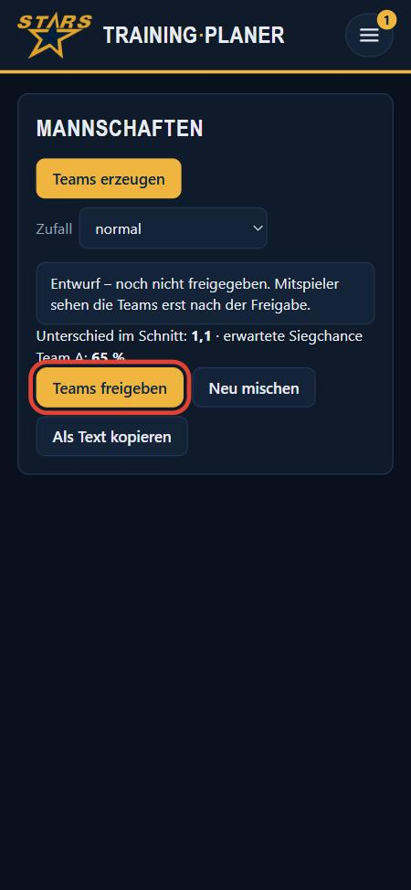
Darunter: Teams freigeben
Wenn die Zusagen stehen: Teams erzeugen. Torhüter, Verteidiger und Stürmer werden gleichmäßig verteilt, aus tausenden Varianten wird eine sehr ausgeglichene gewählt. Mit Zufall (aus / wenig / normal / viel) bestimmst du, wie stark gemischt wird.
Das ist erst ein Entwurf – nur Trainer sehen ihn. Mit den Pfeilen → / ← schiebst du einzelne Spieler ins andere Team, Neu mischen erzeugt eine neue Einteilung. Darunter siehst du den Unterschied im Schnitt und die erwartete Siegchance.
Teams freigeben (rot markiert) – jetzt sehen alle Spieler die Teams (ohne Stärken) und bekommen eine Push-Nachricht.
Änderungen nach der Freigabe sind zuerst nur ein Entwurf („Nicht freigegebene Änderungen“) – die Spieler sehen weiter die freigegebene Einteilung. Erst Änderungen freigeben macht sie sichtbar. Zurück zur Freigabe verwirft die Änderungen (zweimal tippen).
Freigabe zurückziehen blendet die Teams für die Spieler wieder aus.
In WhatsApp teilen öffnet WhatsApp mit der freigegebenen Einteilung als Text – Gruppe wählen, senden. Bei den Linien gibt es die gleiche Taste.
Ändert sich nach der Einteilung die Anwesenheit, erscheint ein Hinweis – dann neu mischen oder Spieler verschieben und erneut freigeben.
5 · Linien für Spiele
Spiel antippen → Reiter Linien.
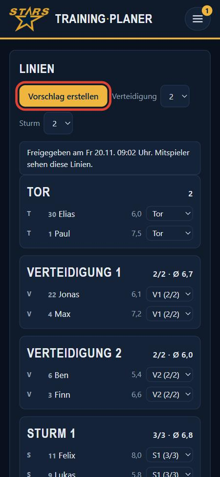
Beim Spiel Vorschlag erstellen (rot markiert): Torhüter ins Tor, dazu so viele Linien wie nötig – 2 Verteidiger bzw. 3 Stürmer je Linie, höchstens 4 Linien – und alle etwa gleich stark. Nochmal tippen ergibt eine andere ausgewogene Verteilung.
Die Anzahl der Linien kannst du bei Verteidigung und Sturm ändern.
Jeden Spieler über die Auswahl rechts (Tor, V1, V2, S1 …) umsetzen. Die Klammer zeigt die Belegung, z. B. „S1 (3/3)“.
Linien freigeben – Spieler sehen die Linien und bekommen eine Push-Nachricht.
Spätere Änderungen bleiben Entwurf, bis du Änderungen freigeben tippst. Zurück zur Freigabe verwirft sie.
Du darfst eine Linie beim Umsetzen überbelegen (z. B. 3 Verteidiger). Freigeben geht aber erst, wenn keine Linie mehr zu viele Spieler hat.
6 · Spieler verwalten
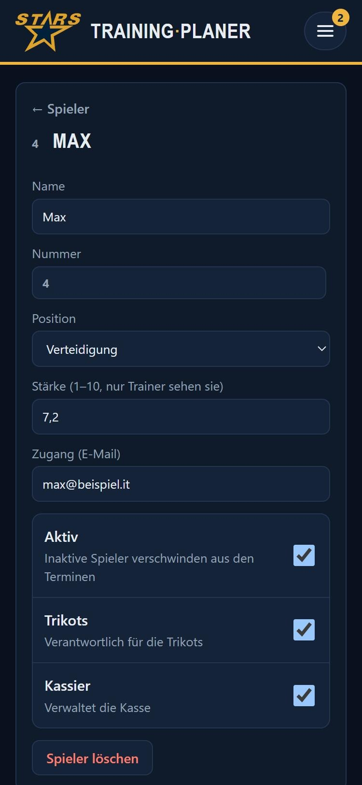
Menü → Spieler. Die Liste zeigt je Spieler Nummer, Name, Position, Zugang und rechts die Stärke; „Sortieren“ ordnet nach Name, Nummer, Position oder Stärke. + Spieler anlegen öffnet das Formular für einen neuen Spieler (Name, Nummer, Position, Stärke). Neuen Spieler einladen (WhatsApp) schickt einem neuen Spieler den App-Link und die Anleitung; er antwortet mit seiner E-Mail-Adresse, die du dann bei ihm einträgst.
Spieler antippen → seine Seite öffnet sich (im Bild). Dort änderst du alles direkt, es wird sofort gespeichert:
Name, Nr., Position
einfach überschreiben – wird sofort gespeichert
Stärke 1–10
für die Team- und Linien-Vorschläge, nur für Trainer sichtbar
Zugang (E-Mail)
mit Adresse kann sich der Spieler anmelden und ist automatisch dabei; ohne Adresse ist er Gast
Kassier
Häkchen = dieser Spieler verwaltet die Kasse (nur mit E-Mail)
Trikots
Häkchen = dieser Spieler ist für die Trikots verantwortlich
Aktiv
Haken weg = pausiert (verletzt, Pause): nicht mehr automatisch dabei, kann aber selbst zusagen
Spieler löschen
ganz unten auf der Seite, zweimal tippen; entfernt auch den Zugang
Mit ← Spieler oder der Zurück-Taste geht es zurück zur Liste.
Beispiel: Neuer Spieler „Jakob“, Stürmer, Nummer 21 → Name, 21, Sturm, Stärke 6 → Spieler anlegen → in der Liste bei „Zugang“ seine Gmail-Adresse eintragen → er kann sich anmelden und ist ab sofort bei allen Terminen dabei.
7 · Nach dem Termin: Ergebnisse
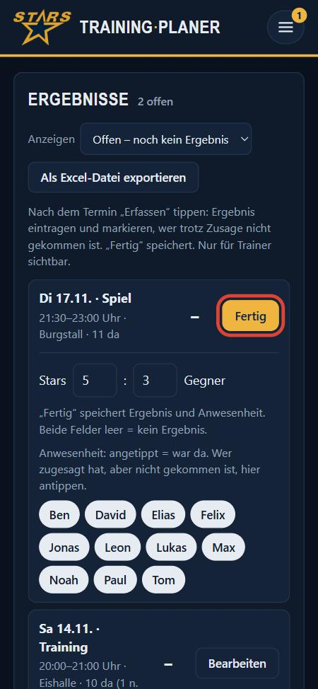
Menü → Ergebnisse. Unter „Offen“ stehen vergangene Termine ohne Ergebnis.
Erfassen tippen. Spiel: Stars : Gegner, Training: Team A : Team B eintragen.
Darunter alle, die zugesagt hatten (hell = war da). Wer nicht gekommen ist, antippen – das gibt die Strafe „nicht erschienen“ in der Kasse.
Fertig (rot markiert) speichert alles.
Ein Termin erscheint hier, sobald er zu Ende ist. Bei Trainings zählt das Ergebnis nur, wenn Teams freigegeben waren.
8 · Statistik und Team-Info
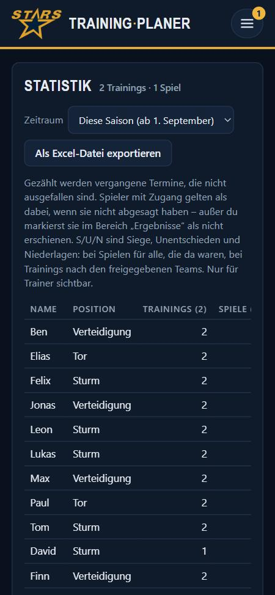
Statistik
Je Spieler: besuchte Trainings und Spiele, nicht erschienen, S/U/N (Siege, Unentschieden, Niederlagen) und die Quote. Zeitraum: Saison (ab 1. September), Kalenderjahr oder alle. Antippen einer Spalte sortiert, Als Excel-Datei exportieren lädt die Tabelle für Excel.
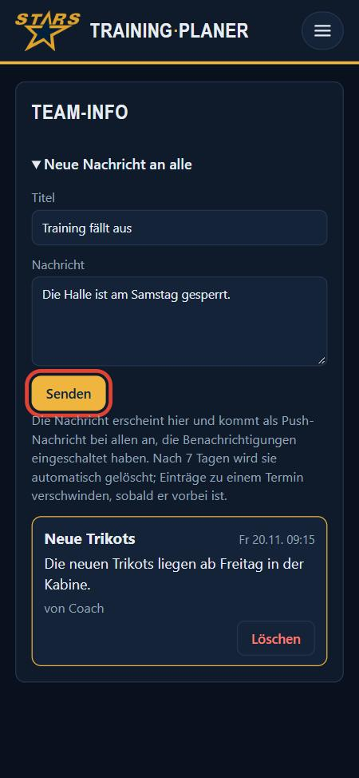
Nachricht an alle (Team-Info)
Menü → Team-Info → Neue Nachricht an alle.
Titel und Text eingeben → Senden.
Alle sehen die Nachricht in der App, und wer Push eingeschaltet hat, bekommt sie aufs Handy. Nach 7 Tagen verschwindet sie automatisch; mit Löschen sofort.
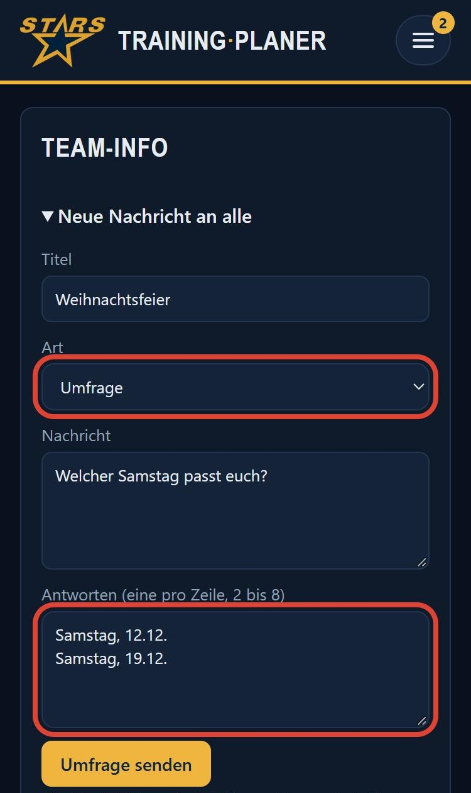
Umfrage
Team-Info → Neue Nachricht an alle → Titel eingeben.
Bei Art „Umfrage“ wählen (rot markiert), darunter die Frage.
Bei Antworten 2 bis 8 Möglichkeiten eintragen, eine pro Zeile → Umfrage senden.
Alle bekommen eine Push-Nachricht und stimmen in der Team-Info ab. Bei jeder Antwort stehen die Namen. Die Umfrage verschwindet nach 7 Tagen.
Beispiel: Titel „Weihnachtsfeier“ · Art Umfrage · Frage „Welcher Samstag passt euch?“ · Antworten „Samstag, 12.12.“ und „Samstag, 19.12.“ → nach ein paar Tagen steht da 3 zu 2.
Geburtstage: Spieler tragen ihren Geburtstag freiwillig unter Konto ein. Am Morgen des Geburtstags erscheint automatisch ein Glückwunsch in der Team-Info.
9 · Kasse und Strafen
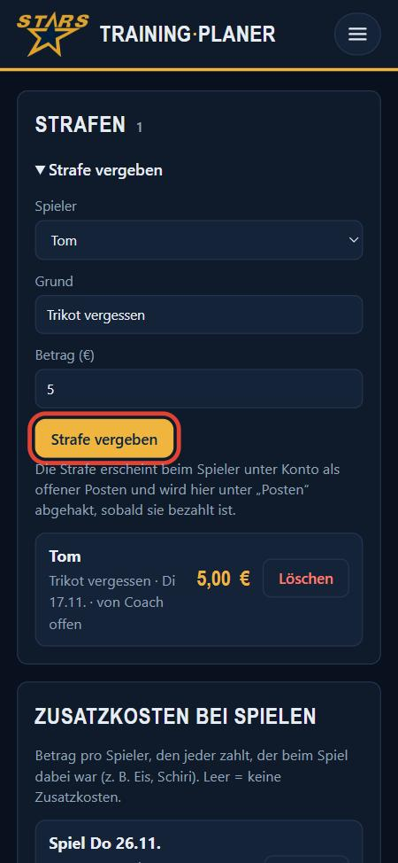
In der Kasse kannst du alles, was der Kassier kann (siehe Kassier-Anleitung). Nur Trainer können zusätzlich Strafen vergeben und wieder löschen.
Beispiel: Tom hat das Trikot vergessen → Menü → Kasse → Reiter Strafen → Strafe vergeben → Spieler „Tom“, Grund „Trikot vergessen“, Betrag 5 → Strafe vergeben (rot markiert). Tom sieht sie unter Konto, der Kassier hakt sie ab, sobald bezahlt. Falsch eingegeben? Unten bei der Strafe Löschen (zweimal tippen) und neu vergeben.
10 · Kassenbuch kontrollieren
Oben in der Kasse steht der Kassenstand, im Reiter Kassenbuch alle Ausgaben (Eisstunden, Schiri …) und Korrekturen. Eintragen kannst du sie genauso wie der Kassier (siehe Kassier-Anleitung).
Vier-Augen-Prinzip
Jeden Eintrag muss eine zweite Person bestätigen – ein anderer Trainer oder der Kassier.
Wartet etwas auf deine Bestätigung, zeigt die Menütaste und der Punkt „Kasse“ eine Zahl.
Stimmt etwas nicht: nicht bestätigen, sondern mit dem Kassier klären. Unbestätigte Einträge kannst du als Trainer auch Löschen.
Bestätigte Einträge sind endgültig – Fehler werden mit einer Korrektur ausgeglichen.
Beispiel: Simon trägt „Schiri Spiel Burgstall – 40 €“ ein → bei dir erscheint eine 1 am Menü → Menü → Kasse → Reiter Kassenbuch → Eintrag prüfen → Bestätigen. Darunter steht dann „✔ bestätigt von …“.
Gut zu wissen
Spieler sagt nach der Frist ab
Termin antippen → Reiter „Anwesend“ → Spieler antippen – Trainer dürfen immer ändern.
Spieler ist länger verletzt oder im Urlaub
Unter den Terminen „Abwesend melden“, Spieler und Zeitraum wählen – nicht jeden Termin einzeln antippen.
Termin ist voll, aber der Spieler soll unbedingt mit
Erst einen anderen (z. B. einen Gast) auf die Warteliste oder abgesagt tippen, dann ihn auf dabei.
Gast spielt mit
Bei Anwesend antippen. Hat er öfter dabei zu sein, in der Spielerliste anlegen; mit E-Mail wird er regulärer Spieler.
Spieler kann sich nicht anmelden
In der Spielerliste prüfen, ob seine Adresse genau stimmt (die, mit der er sich anmeldet).
Neuer Co-Trainer
Trainer-Rechte vergibt der Entwickler (Martin) in der Spielerliste. Der Co-Trainer braucht dafür einen Zugang (E-Mail).
Etwas sieht anders aus
App schließen und neu öffnen – dann ist die neueste Version da.